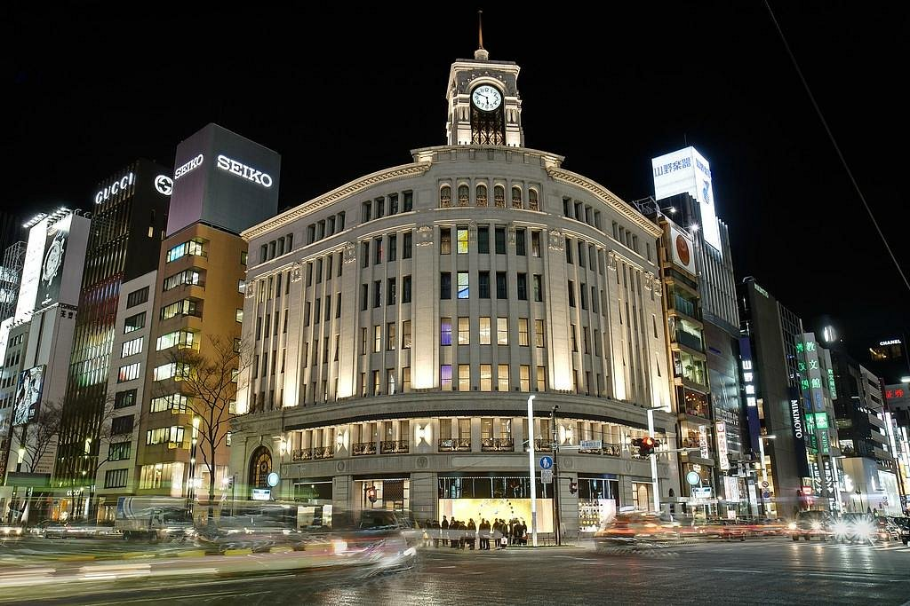

도쿄의 긴자는 일본의 수도인 도쿄에 위치한 지역으로, 전통과 현대가 공존하는 독특한 분위기를 자랑합니다.
긴자는 과거에는 유명한 유흥가와 관련이 있었지만, 현재는 예술과 디자인, 고급 레스토랑, 카페, 갤러리 등이 즐비한 지역으로 변모했습니다.
긴자는 다양한 예술과 문화를 즐기기 위한 장소로 알려져 있습니다. 예술 갤러리, 디자인 스튜디오, 독립 영화 상영관 등이 있어 예술과 디자인에 관심이 있는 이들에게 인기를 끕니다.
또한, 각종 전시회와 행사가 열리는 곳으로도 알려져 있습니다.
또한, 긴자는 고급 레스토랑과 차별화된 카페가 많이 위치해 있어 음식과 음료를 즐기는 이들에게도 좋은 장소로 손꼽힙니다. 특히, 일본 전통 차문화를 경험할 수 있는 차 가게들도 많이 있어 일본 다다미를 마주하고 전통적인 차를 즐길 수 있습니다.
긴자는 도쿄의 현대적인 면과 전통적인 면이 어우러져 있어 독특하고 매력적인 지역 중 하나로 꼽힙니다. 이 지역을 방문하면 일본의 다양한 면을 체험할 수 있으며, 특히 일본의 예술, 디자인, 음식 문화에 대한 풍부한 경험을 즐길 수 있습니다.